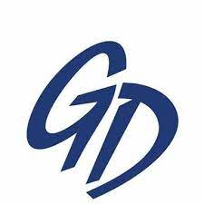
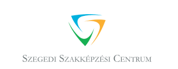
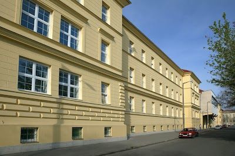
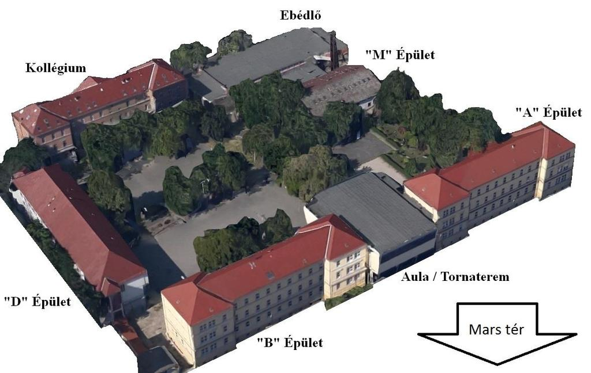

Határtalanul kirándulás
Berde Áron Közgazdasági és Közigazgatási Szakközépiskola
Programok


Az iskolánkról:

A Gábor Dénes Gimnázium és Szakközépiskola a régió egyik vezető középfokú szakképzési iskolája. Szeged (amely a megye fővárosa, és Magyarország harmadik legnagyobb városa)központjában található a Mars tér mellett.
Az iskola nevét Gábor Dénesről, villamosmérnök és fizikusról kapta, akit Nobel-díjjal jutalmaztak a holografikus módszer feltalálásáért és kifejlesztéséért.
Iskolánk 9-14. évfolyamokból áll. Több mint 1400 diák tanul itt. 9-12. évben az általános ismeretekre és szakmai fejlődésre, míg 13. és 14. évben bizonyos területeken a szakmai képesítés megszerzése a fő cél.

Tanulható ágazatok:
- Elektromos ipar és elektronika
- Informatika
- Távközlés
- Pedagógia
- Környezetvédelem
- Sport
- Szállítás és logisztika
- Hidrológia és vízgazdálkodás
Iskolánk vezetősége az igazgatóból és négy igazgatóhelyettesből áll, akiknek a feladata a különböző oktatási és irányít ási feladatok elvégzése. A Szegedi Szakképzési Központ tagiskolájaként a Központ igazgatója az intézmény igazgatója is.
Az angol nyelv tanulása mellett, minden diáknak lehetősége van német nyelvet tanulni. Angol nyelvből sem csak az általános nyelvet hanem speciális célokra például informatikára pedagógiára, környezetre, elektronikára és logisztikára is. Nyelvi osztályunknak több mint 15 tagja van. Ez egy nagyon aktív osztály, amely egész évben különböző versenyek és rendezvények szervezésével népszerűsíti a nyelvtanulást.
A Cserediák Program több mint egy évtizedes múltra tekint vissza. Évente mintegy 20 diák vesz részt, akik német, holland, lengyel és olasz diáktársakkal együtt vesznek részt nemzetközi projektekben. A résztvevő diákok minden évben tavasszal és ősszel vendégül látják egymást. Ennek a csereprogramnak számos előnye van - a diákok megismerik egymás országait és kultúráját, barátságokat is kialakítanak, megismerik a projekt témáját, és mindenekelőtt kitágítják az elméjüket, és megtanulják értékelni a sokszínűséget.
Iskolánk életében a sport mindig is kiemelt helyen szerepelt. A mindennapos testnevelés bevezetésével nőtt a testnevelő személyzet létszáma, ami egyben azt is jelenti, hogy a sportágak szélesebb skáláját lehet tanulni, mint tanórán kívüli tevékenységet. Tanulóink a kézilabdától a futballon, a kosárlabdán, az atlétikán át a vízi sportokig, sőt a harcművészetekig különböző sportágakban sikeresek. Tanulóink részt vesznek a diákolimpiai játékokon, és népszerűsítik iskolánk hírnevét. Tanulóink számára iskolai programokat szerveznek, mint például vízitúra, sífutás és síelés.
Iskolánk sok jelenlegi és volt tanulója kiemelkedő eredményeket ért el a sportban.